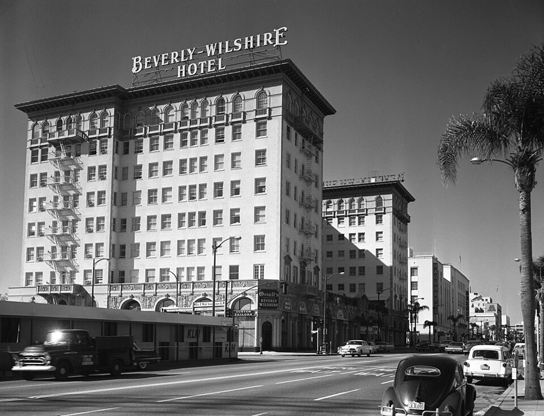
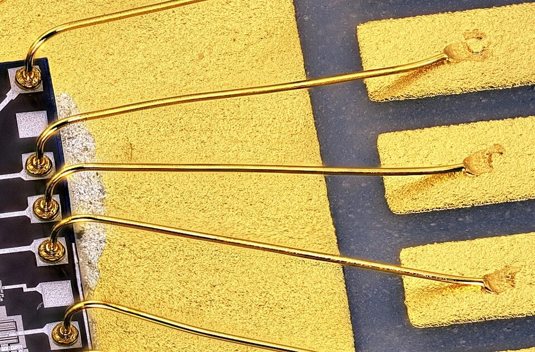
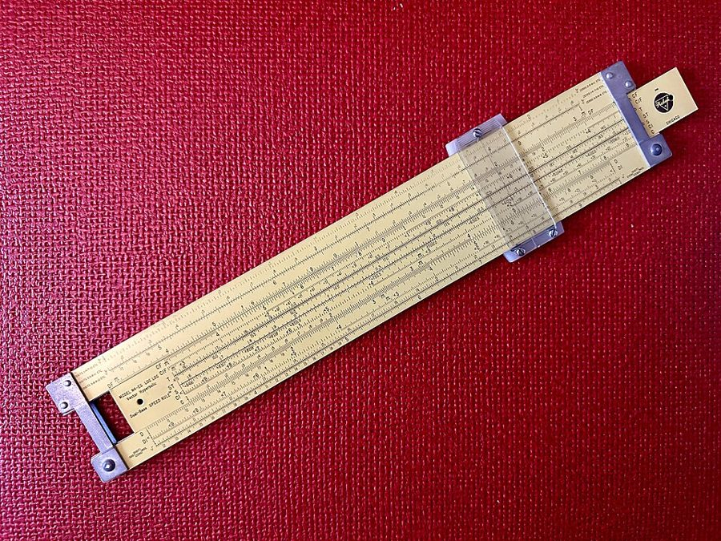
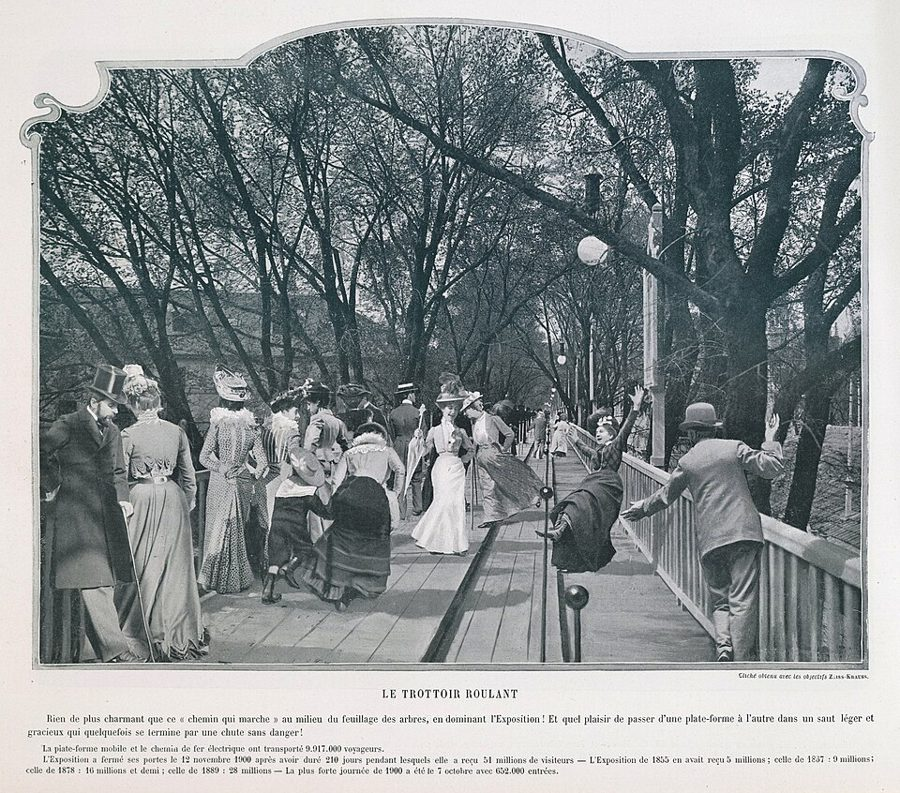

这一章在做什么
还是「适应新环境」，但从看新鲜转到办正事：补课，换衣服，告别医生，然后去办公室结账。
前两个场景轻松，有一串历史摘要里的新名词和一条不听话的裤子。后三个场景是和一位司库的长对话，满是合同和账目上的客气话，留意他说话的腔调。
抓两样：Dan 进门之前对自己的钱是怎么估计的；他平时怎么看「欠人情」。

1959 年的 Wilshire Boulevard，洛杉矶最有名的一条大街。Dan 睡觉的那座冷眠库在这条街的西段。照片是《洛杉矶时报》拍的，就是他早饭时读的那份报纸。
Los Angeles Times，CC BY 4.0，维基共享资源
人物
老人物只写到上一页结束时你知道的。
Dan Davis叙述者「我」醒在 2000 年 12 月的 Sawtelle 冷眠库。认定 Pete 早已不在，打算先去找 Ricky。他的钱三十年前交给保险公司买了股票。
Dr. Albrecht医生唤醒 Dan 的人，劝他多住几天补课。场景 1、2 出场。
Mr. Doughty新冷眠库的 treasurer管钱的人，司库。场景 3 到 5 是他和 Dan 的对话。
Mrs. Schultz只提到一直在给 Dan 留言的人。Dan 不知道她是谁。
Belle、Miles只提到把 Dan 送进冷眠库的两个人。Belle 改过他的合同。
Ricky只提到Miles 的继女。Dan 的 Hired Girl 股票三十年前寄给了她。
Dan 的父亲只提到第 2 章说过，他死在北朝鲜的战俘营里。Dan 引了两句他的话，叫他 my old man。
场景地图
这一页是第 5 章的第 105–179 段，本站按场景分成 5 段。粗体是每个场景开头的几个词，照着它在书里找位置；读完一个场景回来打个勾。
- THE ADDED VOCABULARIES were a …约 450 词补课和换衣服。历史摘要里的名词是设定，扫过去；留意 Dan 对哪一条最来劲。
- Dr. Albrecht asked, “What are …约 450 词告别医生，去总办公室。留意 Dan 进门之前心里在盘算什么。
- The treasurer was a human …约 350 词司库拿出原始合同。Dan 一页一页在查一样东西，留意他怕的是什么。
- “Mmm...Mr. Davis, before we go …约 850 词司库先讲规矩，再讲正题。分清两家公司、两份合同各管什么。
- “Don’t go yet. Mr. Davis...we …约 700 词还在办公室，话题从账目转到别处，最后到了门外。留意 Dan 对人情的态度。
背景：作者默认你知道的事
真实世界里的东西，按在书里出现的顺序排。场景 1 那段历史摘要是把 1956 年的时事往后推了几十年，知道当年的时事才看得出推的是什么。
场景 1Formosa 和 Balkanize
Formosa 是西方人对台湾岛的旧称，葡萄牙语「美丽」的意思。1954 到 1955 年台海危机，美国和台湾当局签了防御条约，这本书动笔时还是报上的大事。
Balkanize：像巴尔干半岛那样，碎成一堆互相敌对的小国。印度 1947 年独立时已经分出了巴基斯坦，所以 Dan 说的是「比从前更碎」。
场景 1黄金：是钱，也是材料

芯片封装里的金线，把硅片上的焊点连到外面的引脚，每根比头发还细。黄金今天确实是电子工业的常用材料，尽管它从来没便宜过。
照片：Mister rf，CC BY-SA 4.0，维基共享资源
1956 年，美元按 35 美元一盎司和黄金挂钩，各国货币再和美元挂钩，黄金是钱的底。
当材料看，它密度大（约是铁的两倍半），导电好，不生锈，延展性是金属里最好的，能拉成极细的丝、打成极薄的箔。一盎司约 31 克。
场景 1the boys in the back rooms
二战时英国人管关在后屋里搞武器研究的科学家叫 back-room boys，1943 年有一本写他们的小说就叫 The Small Back Room。
这个说法后来泛指不露面、在实验室里出成果的技术人员。
场景 1拉链、喇叭裤和魔术贴
魔术贴的钩面，微距拍摄。两面一按，钩子挂住另一面的绒圈。瑞士人 de Mestral 的发明，1950 年代取得专利，和这本书差不多同时问世。
照片：Olivepixel，CC BY-SA 2.0，维基共享资源
拉链（zipper）1910 年代才定型，1930 年代后期才用到男裤的门襟上，在 Dan 的祖父那一辈是新东西。
bell bottoms 是喇叭裤，1950 年代只有水兵穿，是海军的制服裤。cerise 是樱桃红。
场景 4计算尺和公交换乘票

一把 Pickett 牌计算尺。中间那段可以左右抽动，对齐刻度就能做乘除、开方、三角函数，读数靠透明游标上的细线。
照片：ArnoldReinhold，CC BY-SA 4.0，维基共享资源
slide rule：电子计算器出现之前工程师随身带的计算工具，相当于今天口袋里的计算器，Dan 说过他有两把（第 2 章）。
bus transfer：换乘公共汽车时司机撕给你的一张小票，凭它上下一辆车不用再买票。它是美国人口袋里最不值钱的一张纸。
场景 5军队里发饷的人
paymaster 是军队里管发饷的军官。军饷、补贴、差旅费，每一项该不该发、发多少，全看条例怎么写，士兵嘴里的 the book 就是这本条例。
同一本条例，在不同的人手里可以读出不同的结果。Dan 当过几年兵，拿这个打了个比方。
场景 5Wilshire Boulevard 和会动的人行道

1900 年巴黎世博会的「滚动人行道」（trottoir roulant）。并排几条木板带，速度不同，从慢的跨到快的要留神。
作者不详，1900，公有领域，维基共享资源
Wilshire Boulevard 从洛杉矶市中心一路向西通到海边，约 25 公里，Sawtelle 在它的西段。
会动的人行道不是科幻：1900 年巴黎世博会上就有一条三公里多长的。海因莱因 1940 年写过一篇小说，把全美国的公路都换成了这种传送带。
书里的世界
场景 1 的历史摘要一口气交代了书里 1970 到 2000 年之间的几件大事，都是设定。Dan 自己说，这些「人人都比我清楚」，所以他一笔带过，你也不用深究。
本站示意图。作者猜中了一半：黄金确实不再是货币的基础，而且比他写的早了十六年；但金价没有跌，反而涨了。1987 年真的出了一次股灾，纯属巧合。
| 书里的说法 | 在书里是什么 | 真实世界里 |
|---|
| book scanner | 看书的机器，字在上面一行行跑过去。库房用它给醒来的人补课。 | 电子阅读器。 |
| the Great Asia Republic | 一个国家的名字，正在南美洲的生意上挤走美国。没有别的解释。 | — |
| the Formosan treaty | Dan 入睡前就有的一个条约，他认为后来的事从那时起就注定了。内容没说。 | 见「背景」。书里这个条约是虚构的。 |
| England, a province of Canada | 英国成了加拿大的一个省。Dan 愣了一下。 | 没有这回事。加拿大曾是英国的自治领，作者把主从倒了过来。 |
| the panic of ’87 | 1987 年的一次金融大恐慌。同一句里说：黄金如今很便宜，不再是货币的基础，改制时很多人倾家荡产。 | 见上图。 |
| Sticktite closure seams | 2000 年衣服上的合缝方式，一压就粘住，有方向性。Sticktite 是商标名。 | 最接近的是魔术贴，见「背景」。 |
| cerise bell-bottoms | 2000 年男人的日常衣服：樱桃红的喇叭裤。上衣 Dan 叫它 blouse。 | 喇叭裤在 1960 年代末到 1970 年代真的流行过一阵。 |
| slide | 库房楼里一条会动的带子，站上去就把人送到别的房间。 | 机场里的自动人行道。 |
| the Wilshire Ways | 库房门外的东西，有持续的嗡嗡声。书里没解释，看名字是 Wilshire 大道如今的样子。 | 见「背景」。 |
| 机器接待员、机器助理 | 前台和司库的助手都是上一页那种自动机的同类，听数字口令。 | — |
| domestic autoappliance | 2000 年对家用自动机这一行的正式叫法。 | 作者造的词：auto（自动）+ appliance（家电）。 |
| revivified client | 被唤醒的客户。库房有规矩：本人不点头，谁也不能探视、不能打电话进来。 | revivify 是真词，「使复活」，很少用。 |
| 2000 年的物价 | 挑中等的馆子，十美元能吃一顿很不错的晚饭。 | — |
这一章的行话，先用中文过一遍
场景 3 到 5 谈的是钱，用的是合同和会计的词。先看一张图，把上一章结束时的状态理一遍；再看两个概念。
入睡那天，Dan 的东西各去了哪里
本站示意图。都是第 2 章和第 4 章交代过的。Consolidated 是好几家小保险公司合用的库房，它和保险公司不是一家。
第 1 章里 Dan 自己挑的是 Mutual Assurance，它有自己的库房。上一章 Belle 把所有文件上的公司名改成了 Master Insurance，把他送进了另一座库房。
escrow：钱先放在第三方手里
本站示意图。买房时的定金、网购平台的「确认收货后放款」，都是这个机制。
长期合同里，一方怕付了钱对方不干活，另一方怕干了活收不到钱，于是把钱交给双方都信得过的第三方：银行、律师，或者法院。
书里的第三方是 superior court（加州的基层法院）里专管 chancery 事务的那个庭；第 1 章说过，冷眠中的人在法律上归它监护。as earned 是「干完多少付多少」，quarterly 是按季度。
一间病房一天多少钱：账上没有这个数
会计记账按用途分大类：depreciation（折旧，房子设备每年摊掉的价值）、overhead（管理费、水电这类摊不到具体业务头上的开销）、operation（日常运转）、reserves（预留的准备金）、personnel（人工）。
这就像云服务的账单只有计算、存储、流量几个大项，你问「这个接口调用一次多少钱」，财务只能估。把大类成本摊到每件产品、每个床位上去算，叫 cost accounting（成本核算）。
| 英文 | 中文 | 一句话 |
|---|
| treasurer | 司库，财务主管 | 机构里管钱的负责人。 |
| settlement / settle an account | 结算 / 结清账目 | 把该给的钱算清、付清。 |
| assets | 资产 | 一个人或公司名下所有值钱的东西。 |
| custodial contract | 保管合同 | 管「看护这个人」的合同，和管钱的合同是两份。 |
| estate | （一个人的）全部财产 | 第 1 章出现过。management of your estate：替你打理财产。 |
| closed endorsement | 限定背书 | 在支票背面写明「只付给某某」，别人拿去兑不了。 |
| execute a contract | 使合同正式生效 | 签字、办完手续。不是「执行」。 |
| null and void | 无效，作废 | 法律文书上的固定搭配，两个词一个意思。 |
| room and board | 食宿 | board 是伙食。 |
| superior court | （加州的）高等法院 | 名字叫「高等」，其实是各县的基层法院。 |
| quarterly | 按季度 | 一年四次。 |
| auditor | 审计员 | 查账的人。 |
| on the books | 记在账上 | the books 是账簿。 |
| price level | 物价水平 | — |
词与短语
词条按在书里出现的顺序排，按场景分组。斜体小字是它所在的那句话里的几个词，方便你在书里找到。
场景 1 THE ADDED VOCABULARIES were a …
a cinch
… ADDED VOCABULARIES were a cinch; I spent …
小菜一碟
cinch 本是马鞍的肚带，勒紧了就稳当，引申为「十拿九稳、很容易的事」。
put it down
… but why put it down when everybody …
把它写下来
Dan 在对读者说话：这三十年的事你们都比我清楚，我何必写。
in the cards
… had been in the cards since the …
早就注定了
cards 是算命的纸牌：牌面上已经写着。
Balkanized
… India more Balkanized than ever. …
四分五裂的
见「背景」。
stop me
… province of Canada stopped me for a …
让我愣住了
which was the tail and which was the dog
… the tail and which was the dog? …
到底谁是尾巴、谁是狗
成语 the tail wagging the dog：尾巴摇狗，小的支配大的。
lose their shirts
… many people lost their shirts in the …
赔得精光
连衬衫都输掉了。change-over 是「切换、换制度」。
ductility
… good conductivity, extreme ductility...and stopped when …
延展性
能拉成丝而不断的性质。conductivity 是导电性。
morally certain
… I stopped, morally certain that Eager …
几乎可以肯定
固定搭配：没有证据，但心里认定。和「道德」无关。
the boys in the “small back rooms”
… in the “small back rooms” while …
实验室里那帮搞研究的
见「背景」。
check out
… I was ready to check out. He …
办手续离开
旅馆退房的那个词。
fagged
… that I was fagged just from lying …
累垮了
老式口语，= exhausted。现在基本没人这么说了。
cerise trousers with bell bottoms
… never worn cerise trousers with bell bottoms …
樱桃红的喇叭裤
without coaching
… manage the fastenings without coaching. I …
没人教就（弄不好）
coach 作动词是手把手指导。fastenings：扣合的地方。
get it through my head
… before I got it through my head …
总算弄明白
把一件事「塞进脑袋」。
axially polarized
… adhesion was axially polarized. …
沿轴向有极性的
工程师腔：这种粘合只认一个方向，顺着压才粘，横着不粘。为了一条裤子用上了物理学术语。
ease the waistband
… I tried to ease the waistband. …
把裤腰松一松
ease 作动词：放松一点。
场景 2 Dr. Albrecht asked, “What are …
I don’t aim to
… obsolete engineer. I don’t aim to stay …
我可不打算
aim to 是美国乡土口语里的「打算」。obsolete：过时淘汰的，平常说机器，Dan 拿来说自己。
swell
… Doc. You’ve been swell. Uh, maybe …
真够意思
形容词，1930–50 年代的口语，= great。不是「肿胀」。
how well off
… just how well off I am—but …
手头有多宽裕
well off = 有钱。
let it go with words
… intend to let it go with words. …
光嘴上说说就算了
more substantial
… for me should be more substantial. …
更实在一点
不好意思直说「钱」，所以后面追问一句 Understand me?
might as well
… paid for. Might as well use it. …
不用白不用
省了主语 You。
blouse
… tucked it in my blouse, while thinking …
上衣
今天多指女式衬衫；当年美军的制服上衣也叫 blouse。Dan 用它称呼 2000 年的男式上衣。
Step this way
… said, “Step this way, please. Our …
这边请
下一段 Dan 说 so I stepped that way，照字面把这句客套话接了过去。
plunge in
… on having plunged in common stocks …
大笔押在……上
plunge 本是一头扎进水里；股市里指重仓豪赌，plunger 是大赌客。
play it “safe”
… rather than playing it “safe.” No …
求稳
引号是 Dan 加的：他不认为国债真的稳（第 1 章）。
figuring
… paper with me, figuring I might …
心想
figure 作动词，美国口语里就是 think。
场景 3 The treasurer was a human …
even though he looked like a treasurer
… even though he looked like a treasurer. …
尽管他长得就像个管钱的
玩笑：长得像司库的人，不大像活人。他的姓 Doughty 里还藏着一个 dough（钱，第 1 章）。
settlements
… company handle its settlements through your …
结算，兑付
不是「定居点」。
home offices
… go to their home offices?” …
总部
home office 是公司的总办事处。不是「在家办公」。
keep my fingers crossed
… I had kept my fingers crossed ever …
一直在暗暗祈祷
中指压在食指上，求好运的手势。
bite the end off
… way to bite the end off that …
从……上啃下一块
Dan 的说法：怕她从那张支票上弄走一截。
play hanky-panky with
… harder to play hanky-panky with than is …
在……上做手脚
hanky-panky：见不得人的小动作。
commitments
… had left my commitments unchanged, except …
（合同里）我定下的各项安排
上一页报纸上的 commitments 是「入库名单」，同一个词换了意思。
a real artist
… gal was a real artist, no question. …
真是一把好手
artist 指手艺高超的人，这里夸的是造假的手艺。上一章 Belle 自己说过「让你看看行家干活」。gal = girl。
closed endorsement
… with the closed endorsement on the …
限定背书
见行话表。endorsement 是在支票背面签字。
outsmart
… another person can outsmart...and Belle was …
用智谋胜过
上一页他对自动门说过几乎一样的话，那次是夸工程师。
put it in two words
… can put it in two words. How …
两个词就说完
put 是「表达」。那两个词是 How much?
场景 4 “Mmm...Mr. Davis, before we go …
in escrow
… are placed in escrow with the …
交第三方托管
见上面的行话。
as earned
… quarterly to us as earned.” …
干完多少付多少
earn 是「挣得」：服务做完了，这笔钱才算挣到手。
What are you getting at?
… Doughty, what are you getting at?” …
你到底想说什么？
get at：绕着弯想表达的意思。
close out
… I had closed out my checking account …
销户，把钱全取出来
checking account：开支票用的活期账户。
in the soup
… place—and in the soup—I had started …
陷进麻烦里
上一章 Belle 管那种药叫 zombie soup，这里多半是有意的双关。
pack rat
… never been a pack rat—and that minor …
什么都舍不得扔的人
本是一种爱往窝里拖东西的老鼠。
not even a bus transfer
… “Not even a bus transfer, Mr. Doughty.” …
连一张换乘票都没有
见「背景」。意思是一文不名。
circle the field
… my head circled the field and came …
（飞机）在机场上空盘旋
field = airfield。整句见读后的「值得停下来的句子」。
in fine shape
… invested in are in fine shape. I …
状况很好
第 1 章的 in worse shape 是同一个 shape。
go under
… would not have gone under if it …
垮掉，倒闭
像船沉下去。
looted, gutted, milked
… been systematically looted... gutted—‘milked’ is the …
洗劫，掏空，「榨干」
三个词一个比一个土。gut 是掏内脏；milk 是挤奶，司库特意声明这是俗话。
salvage
… something at least would have been salvaged. …
抢救出来，捞回一点
本指打捞沉船上的货。同一句里的 receivership 是破产接管：法院派人进驻，清点剩下的财产分给债主。
beyond extradition
… done it were beyond extradition. Uh, …
（逃到了）引渡不回来的地方
extradition：一国把逃犯交还另一国。
if it is any consolation
… if it is any consolation to you, …
如果这能让您好受一点的话
说坏消息之后的套话。
make out
… how did Mutual Assurance make out?” …
后来怎么样了
make out 作不及物：进展、混得如何。
take their licking
… they took their licking during the …
挨了一顿打，吃了大亏
licking 是一顿痛揍，和「舔」无关。
weather it
… else. But they weathered it. You …
挺过来了
weather 作动词：（船）顶住风暴。
look to
… I couldn’t look to Mutual; I …
指望，找……要
execute
… had never executed my contract with …
使（合同）正式生效
不是「执行」，更不是「处决」。
Null and Void
… all over with “Null and Void”...using a …
「无效作废」
合同上的戳记。Dan 想把这几个字刺在 Belle 身上，还要用钝针。
boot me out
… when they had booted me out. “Mr. …
把我一脚踢出去
as such
… the Mannix empire, as such, no longer …
作为那样一个整体
言下之意：帝国没了，碎片也许还在。
break it gently
… thanks for breaking it gently, Mr. …
把坏消息说得委婉
break the news：告知（坏）消息。
场景 5 “Don’t go yet. Mr. Davis...we …
the mere letter of the contract
… beyond the mere letter of the contract. …
合同的字面条文
letter 是「字面」，和 spirit（精神实质）相对。
at my disposal
… discretionary fund at my disposal to ease …
归我支配
disposal 这里是「处置权」，不是「丢弃」。discretionary fund：不用逐笔报批、主管自己说了算的一笔钱。
character loan
… A loan. A character loan, you might …
信用贷款
没有抵押，凭借款人的人品（character）放贷。
the price of a haircut
… even have the price of a haircut. …
理一次发的钱
the price of … = 买得起……的钱。
beans and bed
… days of beans and bed here.” …
管吃管住
当兵的说法。军队伙食里豆子多，beans 就代指饭。正式说法是两段之后的 room and board（食宿）。
out of my line
… a little out of my line. Still...well, …
不是我的本行
line = 行当。What’s your line?
have … coming
… “I had four days coming. Will …
有……是该我得的
have something coming (to you)：应得而还没到手。后面 what you’ve got coming to you 同。
stay on the books
… does not stay on the books too …
一直挂在账上
Is money tight?
… percent? Or is money tight?” …
还是眼下银根紧？
tight money：市面上钱少、利率高。Dan 在问利息按六厘算够不够。
cancel it against
… did, I canceled it against your unused …
拿它和……对冲、相抵
会计用语。
twist your arm
… didn’t intend to twist your arm. Of …
逼你就范
fiddling
… for a fiddling four hundred dollars? …
区区的，微不足道的
形容词。和拉小提琴无关。
reasonable
… “Food is quite reasonable. For ten …
价钱公道，不贵
come in only two sizes
… Paymasters come in only two sizes: One …
只有两种
把人说成只有两个尺码的货。
rate it
… even if you don’t rate it. …
够格享受
军语：按级别、条例有资格得到。
take stock
… a bench to take stock and to …
盘算一下自己的处境
本是商店盘点存货。和「股票」无关，虽然这一场谈的正是股票。
keep a stiff lip
… I had kept a stiff lip with …
硬撑着不露声色
全称 keep a stiff upper lip。
in my jeans
… week’s meals in my jeans. …
在我兜里
口语里 jeans 泛指裤兜。他身上穿的其实是那条樱桃红的喇叭裤。
Hallelujah, I’m a bum
… Whistling “Hallelujah, I’m a bum,” I opened …
「哈利路亚，我是个流浪汉」
二十世纪初美国流浪工人的歌，调子是赞美诗，词是自嘲。上一页梦里也有人骂过他 bum。
Unskilled
… turned at once to “Unskilled.” …
「无需技术」（的工作）
招聘栏的分类：Professional 是专业人员，Unskilled 是普工。
值得停下来的句子
I held still while my head circled the field and came in for a crash landing.
— 场景 4。本站译：我一动不动，等我的脑袋在机场上空盘旋完，一头栽下来迫降。
Dan 听到坏消息，不写「我惊呆了」，写一架飞机。circle the field 是落地前在机场上空兜圈子，come in 是进场，crash landing 是摔机着陆。
身体是 held still，不动的；脑子在天上转了几圈才摔下来。上一页医生说 crash 的时候他就嫌这个词不吉利。
borrowing money is like trying to swim with a brick in each hand
— 场景 5。本站译：借钱就像一手攥一块砖去游泳。
这是 Dan 掂量要不要接受贷款时的话，后面还有半句：小额的债比一百万更难还。欠一百万，急的是债主；欠四百块，急的是你自己。
他转眼想出来的办法，是把「借」换成「我本来就该得的」：问清四天食宿值多少钱，再开口要这个数。
That classification was darned short. I almost couldn’t find it.
— 全章最后两句。本站译：那一栏短得要命，我差点没找着。
收尾收在一个不解释的细节上。一个三十年前的工程师自认只配干普工，翻到普工栏，发现这一栏几乎没有了。为什么没有，书里一个字没说，可这一章里端早饭的、坐前台的、给司库递文件的都是谁，读者是看见了的。
检查一下理解
先在心里答，再点开。答错的那题，回书里把对应的场景再读一遍。
1.（场景 1）黄金跌价让很多人倾家荡产，Dan 为什么说他没法把这当成悲剧？
他是用工程师的眼睛看的：黄金密度大、导电好、延展性好，便宜了就是一种极好的材料。他马上想到微型化，并且认定那台机器护工的「脑袋」里塞满了金子。别人看见的是钱没了，他看见的是能用了。
2.（场景 1）Dan 说差点得「雇个小男孩帮我上厕所」，是什么难住了他？
新衣服的合缝。它不是拉链也不是扣子，要顺着一个方向压才粘得住，他一直没摸到窍门。后来想松一松裤腰，又差点把裤子弄掉。
3.（场景 2）Dan 说对医生的感谢「应该更实在一点」，指什么？医生为什么不收？
指钱。他以为自己很快就有一大笔钱，想酬谢医生。医生说他的报酬已经包含在他和库房的合同里，不能另收，请 Dan 别再提。
4.（场景 2）「我也许把 Flexible Frank 做得太 flexible 了」，Dan 在抱怨什么？
前台接待员是一台机器。他说从前接待员都是漂亮姑娘，现在连这个位置也被他那台机器的后代占了。半是玩笑，半是真的不习惯。
5.（场景 3）Dan 一页页查合同，最担心的是什么？他查到了什么？
最担心 Belle 对那张保付支票动了手脚，把钱弄走。结果他的各项安排原样未动，只有三处变化：公司名全改成了 Master Insurance，给 Pete 的附约没了，关于 Hired Girl 股票的那份也没了。他松了一口气，松得太早。
6.（场景 4）保险公司倒了，库房为什么照样把 Dan 看护了三十年、按时唤醒？
因为那是两份合同、两家公司。看护费在入库时一次付清，存在法院托管，按季度付给库房，谁也动不了。交给保险公司打理的财产是另一份合同，那一份随着公司一起没了。
7.（场景 4）Master Insurance 是在 the Panic 里赔光的吗？
不是。它属于 Mannix 集团，集团在恐慌之后垮台；而公司本身是被内部的人有计划地掏空的，发现时只剩空壳，那些人已经逃到引渡不回来的地方。所以连破产清算能捞回的那一点都没有。
8.（场景 4）Mutual Assurance 挺过来了，Dan 为什么不能去找它？
他当年和 Mutual 谈好的合同从来没有正式生效：文件被 Belle 改成了另一家公司，送去的也是另一座库房。Mutual 的账上没有他这个客户。告 Belle 和 Miles 也没用，他没有任何证据。
9.（场景 5）Dan 拿到的四百美元，到底算借款、算施舍，还是别的？
都不算。司库先提出贷款，Dan 不肯白拿也不想欠债，就把自己还没用掉的四天免费食宿折成钱，说「借我这个数」。司库顺水推舟，直接记成用那四天抵掉，不算贷款，Dan 不用还。代价是那四天他不能再回去住。
10.（场景 5）Dan 说 Doughty 是「第二种」发饷官。两种各是什么？
第一种翻开条例，指给你看你该得的东西为什么不能给你。第二种把条例翻个遍，直到找出一条能让你拿到你需要的东西，哪怕按级别你不够格。Doughty 找到的那一条就是「未用的四天」。
留给后面的问题
这一章自己提出来、没有回答的。
- 一个知识停在 1970 年的工程师，在普工栏都快没有了的 2000 年，靠什么吃饭？
- 司库不相信 Hired Girl 和 Mannix 集团有多少关系。那么 Miles 和 Belle 当年那笔买卖后来怎样了？Ricky 的股票呢？
- Mrs. Schultz 的第二张留言，Dan 还是没有回。